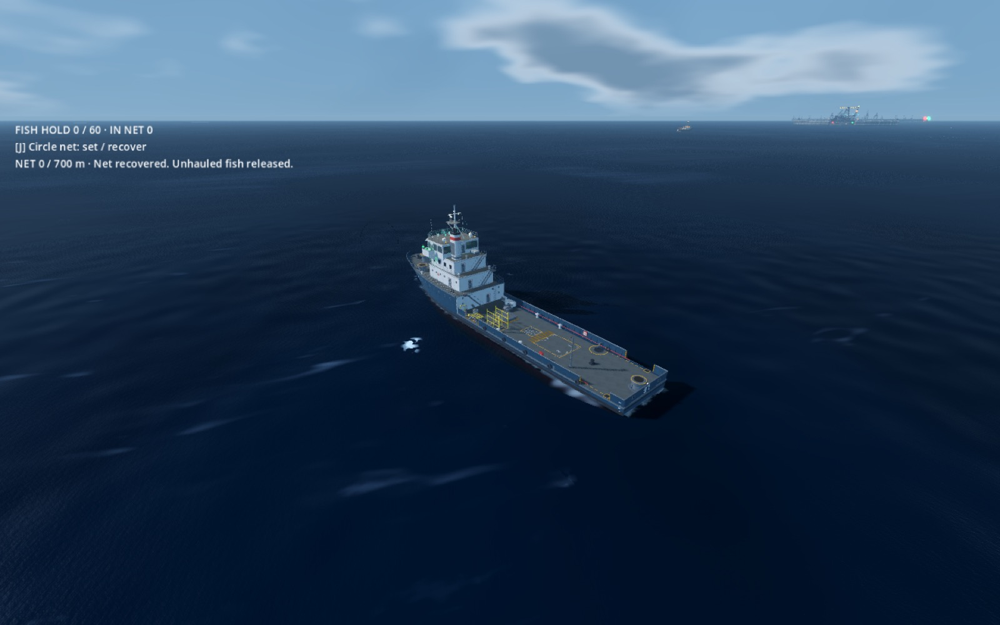
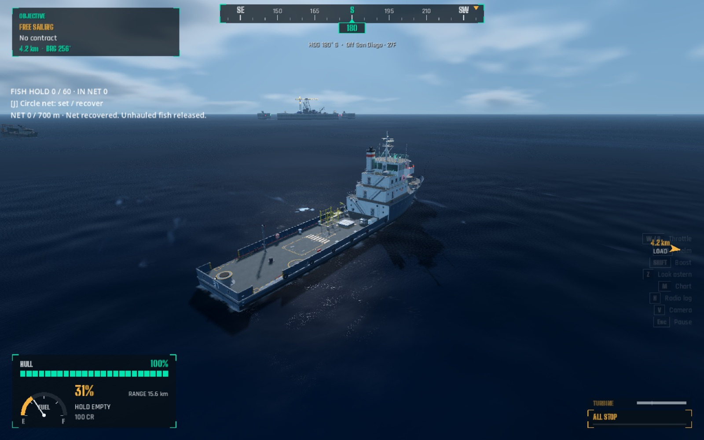
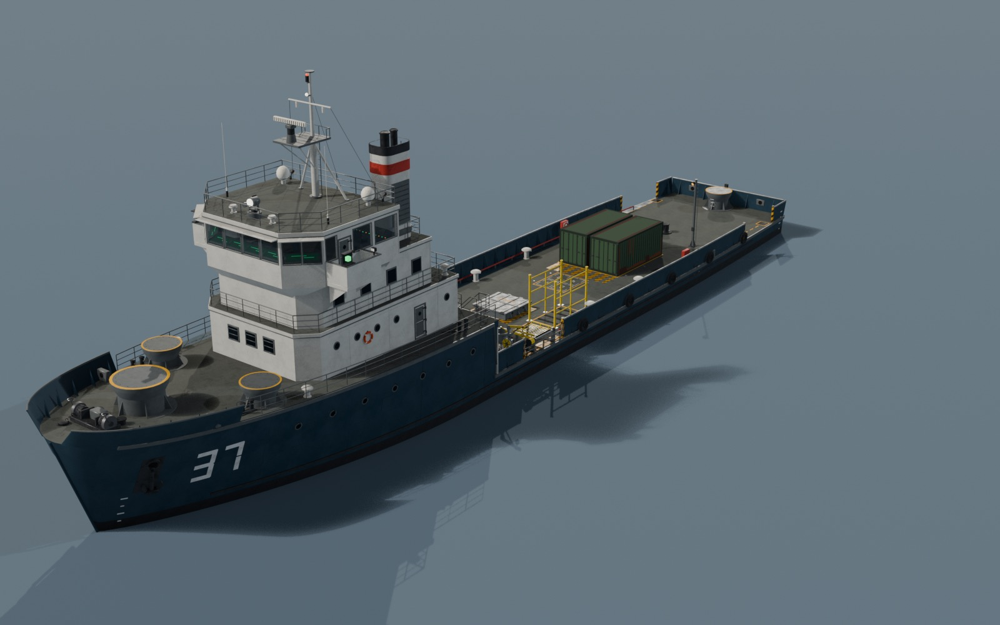
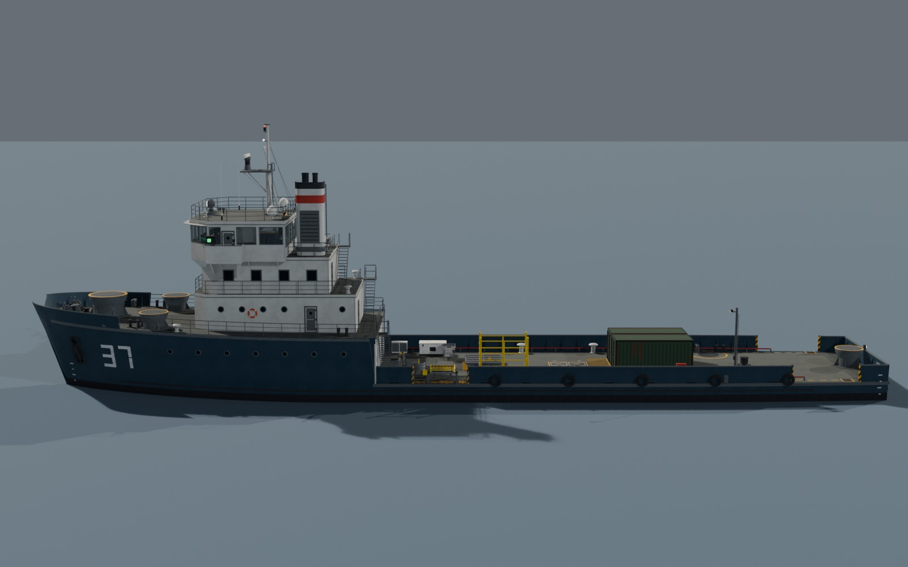
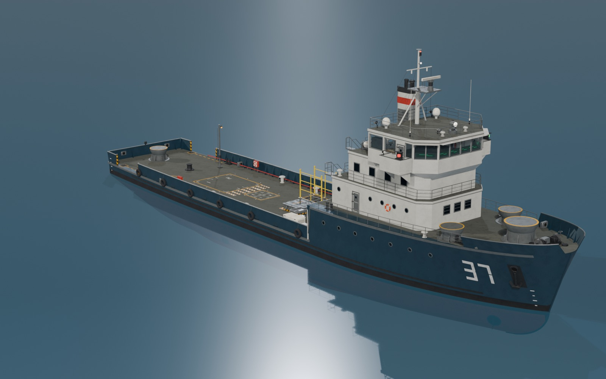

Runners · Player ships
Crab boat
Runners is in development. Details will change.
Final Approved 2026-11-15
Sets and hauls pots. Two containers.










Her sheet
- Class
- Fishing
- Level
- 4
- Size
- 66 m long, 12.5 m beam
- Containers on deck
- 2 × 20 ft
- Pallet places
- 4
- Fish hold
- 60 units
- Weapon mounts
- 4: 3 small, 1 medium
- Loot nets
- one boom each side. No scrap magnet
- Deck crane
- grade 3
- Fishing gear
- Pots: a pot hauler at the rail and stacked crab pots on deck.
- Speed / hull
- 33 m/s, 900 HP
- Price
- 18,000 CR
How she works
- Cargo: 2 × 20 ft containers on marked deck spots and 4 pallets on deck. A crane at the berth lifts cargo on and off from above; nothing rolls on.
- Loot: sunk pirates leave pallets floating, each with a random load. A net boom on each side swings out over the water and scoops a pallet up as she drives past. It lands on one of her 4 pallet places, so a full deck takes no more. She has no magnet, so she cannot lift scrap.
- Fishing: Going slowly (under 4 m/s) she drops a pot over the rail and a flagged buoy marks it. The pot soaks for about 75 seconds. She comes back within 25 m of the buoy and the hauler lifts the pot at the rail, about 9 crab a pot. She works 4 pots at a time.
- The catch: it goes down the fish-hold hatch (60 units) and shows as fish boxes and crab crates on her pallet places. At the berth a crane lifts it off.
- Fighting: 4 weapon mounts (3 small, 1 medium). The player buys and fits the guns; each one trains and fires on its own pad.
- Handling: 33 m/s top speed, 900 hull points.
Ideas for her
Proposals, not decided yet.
- Proposal: A pot launcher beside the hauler: a tilting rack at the rail that tips a pot over the side.
- Proposal: the fish-hold hatch on the working deck opens to show the hold filling with the catch.
Her story
Her story has not been written yet.
From the World Atlas
Sets and hauls pots. Two containers.
Fish hold: 60 units; Loot nets: one boom each side. No scrap magnet; Deck crane: grade 3; Fishing gear: Pots: a pot hauler at the rail and stacked crab pots on deck.
World Atlas, Runners 2055: the ships